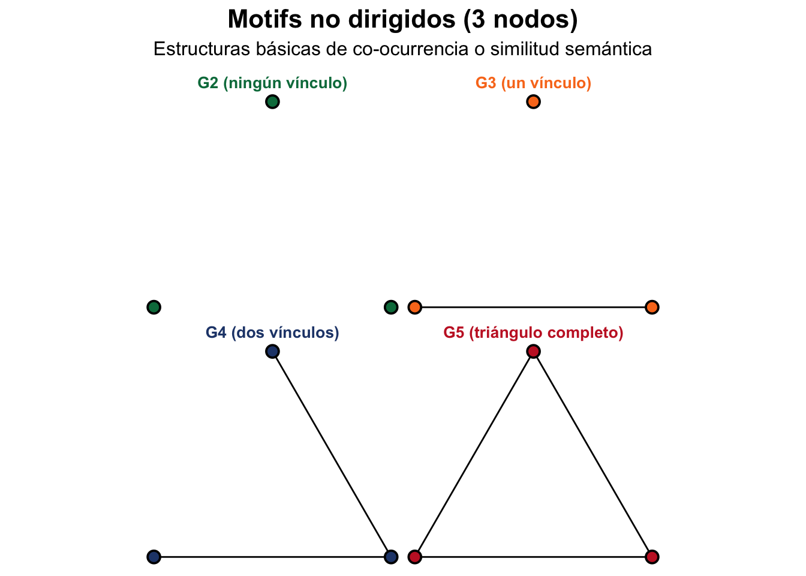
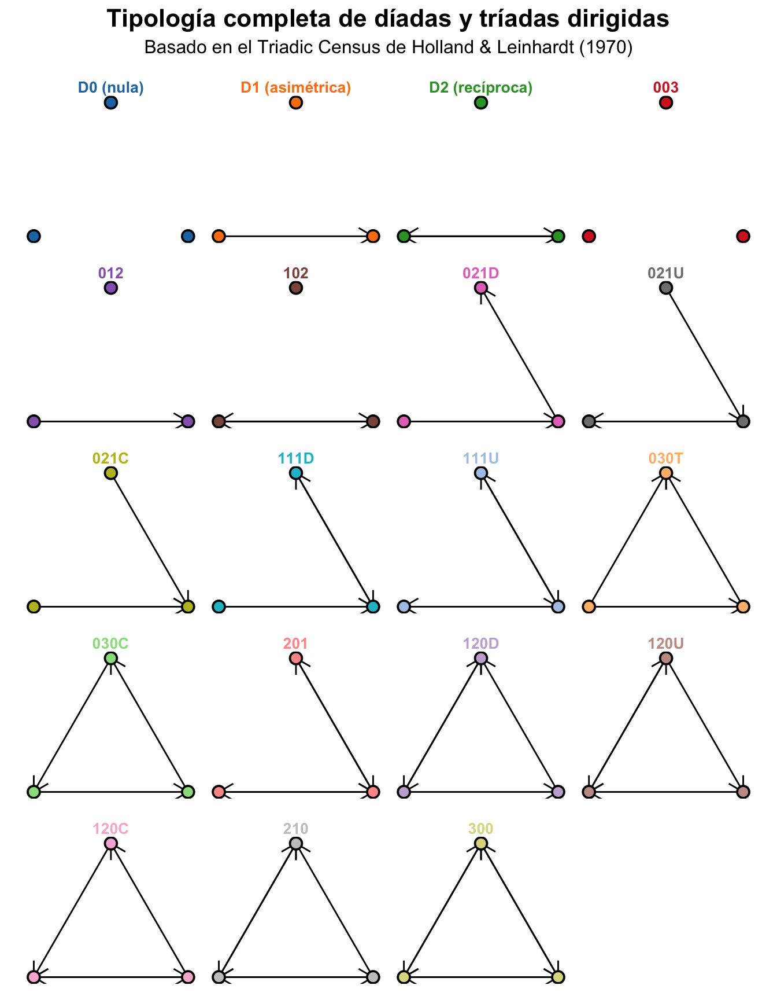
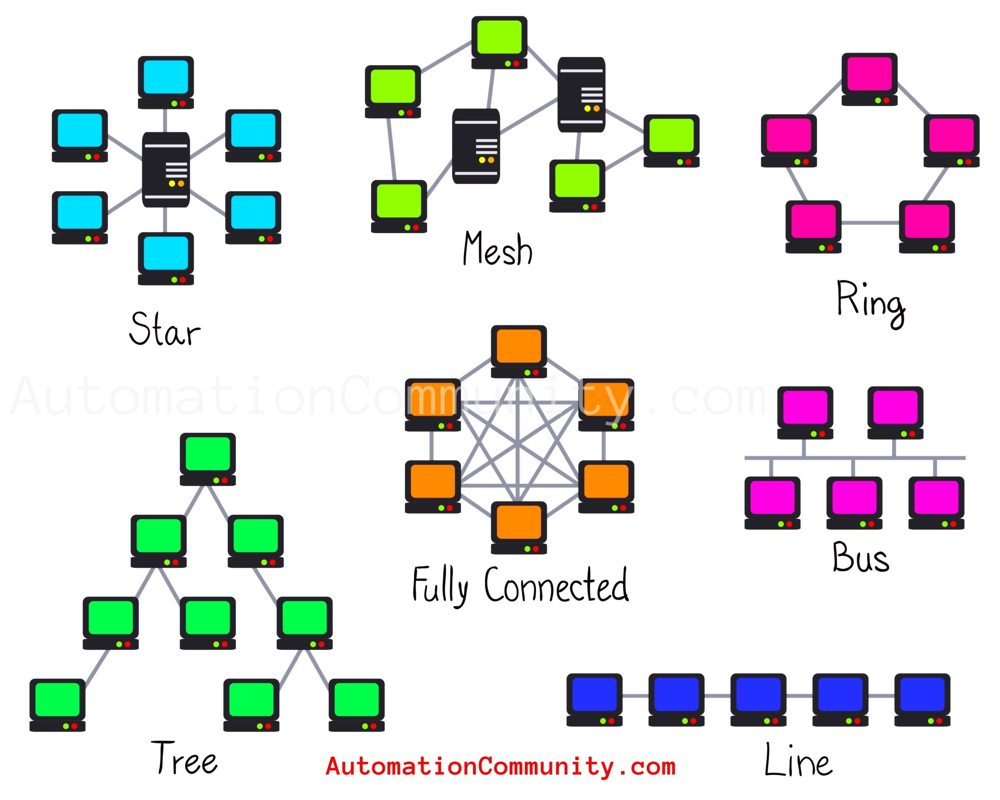

Redes
semánticas
Emplear palabras para revelar vínculos
Introducción
El análisis de redes sociales es una metodología ya consolidada en las ciencias sociales para estudiar las relaciones entre entidades. Se trata de un método muy poderoso para entender estructuras de interacción, definir roles diferenciados y jerarquizar entidades según su mayor o menor centralidad en la red. En ese sentido, un partido, un diputado o una palabra no son importantes por si solos. El mismo concepto de centralidad es multifacético, puesto que existen diferentes formas de influencia que son complementarias y que se establecen fundamentalmente por la posición que cada entidad ocupa en la estructura más amplia de la red.
Por lo tanto, el análisis de redes sociales permite situar una unidad (persona, institución, palabra) en el contexto más amplio en el que se ubica para entender qué rol ocupa y su importancia relativa en toda la estructura. Tales características nos permiten situar palabras en sus contextos más amplios y revelar asociaciones entre ideas, conceptos o formas discursivas.
Antes de empezar
Antes de empezar, lo mejor es crear los datos para que podamos ilustrar los conceptos básicos de las redes semánticas. Empezamos por crear una función llamada genCoocurrence que genera una red de co-ocurrencias con todas las palabras del corpus. Esta función tiene tres parámetros. El primero es el corpus de quanteda con los textos a analizar. El segundo, adjacent=TRUE, corresponde una variable lógica que indica si la co-ocurrencia será adyacente (una palabra y su siguiente), con valor adjacent=TRUE, o general (pares de todas palabras del texto entre sí), con valor adjacent=FALSE. Finalmente, el último parámetro establece si la función retorna un objeto graph de igraph (return.graph=TRUE) o un data.frame (return.graph=FALSE).
Code
# Crea la función para generar una
# red de coocurrencias a partir de
# un corpus de texto
genCoocurrence <- function(corpus,
adjacent=TRUE,
return.graph=TRUE){
tk <- quanteda::tokens(corpus,
remove_punct = T,
remove_symbols = T,
remove_numbers = T)
tk <- quanteda::tokens_remove(tk,
c(quanteda::stopwords("es"),"—","—"))
# Crea una base de datos
# que irá acumular las coocurrencias
res <- data.frame()
# Para cada diálogo
for(i in 1:length(tk)){
# Obtiene las palabras
ky <- as.character(tk[[i]])
# Si solo hay una palabra
# para al siguiente diálogo
if(length(ky) < 2){
next
}
if (adjacent==TRUE){
# Genera las coocurrencias usando adyacencia
d1 <- data.frame(from = ky[-length(ky)],
to = ky[-1])
}else{
# Genera las coocurrencias usando ventana
d1 <- data.frame(t(combn(ky,2)))
names(d1) <- c("from", "to")
}
# Establece el peso
d1$weight <- 1
# Acumula los resultados
res <- rbind(res, d1)
}
res <- res
res$from <- tolower(res$from)
res$to <- tolower(res$to)
g <- igraph::graph_from_data_frame(res,
directed = FALSE)
g <- igraph::simplify(g,
remove.multiple = FALSE)
# Crea una nueva base de datos
# con la red simplificada
res <- igraph::as_data_frame(g)
# Agrega las coocurrencias por
# diada de palabras
ag <- aggregate(weight ~ from + to,
data = res,
FUN = sum)
if(return.graph==TRUE){
# convierte en un gráfico no direccional
g <- igraph::graph_from_data_frame(ag,
directed = FALSE)
# Establece la frecuencia como
# el peso
igraph::E(g)$weight <- ag$weight
return(g)
}else{
return(ag)
}
}A continuación, empleamos la función recién generada para crear la red de co-ocurrencias de palabras en el debate sobre la ley de memoria histórica. En total son 5641 palabras y 148.819 vínculos entre ellas. Se trata de una red sin filtrar. No hemos eliminado ninguna relación todavía, de modo que no recomiendo que intentemos visualizarla. Seguramente no obtendremos buenos resultados visuales.
Code
library(quanteda)
da <- spa.sessions[grep("Número de expediente 121/000064",
spa.sessions$issue.details),]
da <- da[da$rep.condition!="Miembro de la mesa",]
cp <- corpus(da, text_field = "speech.text")
cp <- corpus_reshape(cp,
to = "sentences")
# Genera el gráfico a partir
g <- genCoocurrence(cp)Elementos básicos de una red
Una red está compuesta por nodos y enlaces. Los nodos representan las entidades que se están analizando, como personas, instituciones o palabras. Los enlaces representan las relaciones o interacciones entre esos nodos, como conversaciones, colaboraciones o coocurrencias en un texto.
A partir de estos elementos básicos, se pueden construir gráficos de red que visualizan las conexiones entre los nodos. Estos gráficos permiten identificar patrones de interacción, comunidades dentro de la red y nodos clave que desempeñan roles importantes en la estructura general.
Las redes pueden ser dirigidas o no dirigidas. En una red dirigida, los enlaces tienen una dirección específica, lo que indica quién inicia la interacción o relación. En una red no dirigida, los enlaces son bidireccionales, lo que significa que la relación es mutua entre los nodos conectados. Por ejemplo, las redes sociales representan redes dirigidas. Nosotros podemos seguir a otras personas que no necesariamente nos siguen a nosotros. No hace falta la reciprocidad en la acción.
Esas dos piececitas básicas pueden combinarse de múltiples formas, generando arquitecturas complejas que permiten análisis bastante sofisticados. Emplean dos formas fundamentales (o piezas de LEGO) que constituyen la base de todas las demás estructuras en la red:
díadas: dos nodos conectados por un enlace. Representan la relación más básica entre dos entidades. Es la forma de organización social más básica.
tríadas: tres nodos conectados por enlaces. Permiten analizar relaciones más complejas y la formación de grupos dentro de la red.
Abajo podéis ver el listado de todas las combinaciones posibles entre tres nodos, lo que se denominan como motivos (motifs) en una red no dirigida:

Y ahora en una red dirigida:

Como podemos ver, las relaciones pueden ser direccionales o no, recíprocas o no, transitivas o cíclicas, entre otras muchas posibilidades. Estas estructuras básicas pueden combinarse para formar redes más complejas que reflejan las interacciones reales entre entidades en diversos contextos.
Topología de redes
La topología de una red describe su estructura global y la forma en que los nodos están interconectados. Diferentes topologías pueden influir en cómo se difunde la información, cómo se forman comunidades y cómo se organizan los temas dentro de un corpus textual. Una rede puede tener forma de estrella en la que un nodo central conecta a todos los demás nodos. Corresponde a la estructura más centralizada de todas, puesto que una unidad es la responsable por la conexión y la transmisión de información en la red.

Otra topología común es la red en malla (mesh), donde los nodos están interconectados de manera más uniforme. Esta estructura permite una mayor redundancia y resiliencia, ya que la información puede fluir a través de múltiples caminos. En el contexto del análisis de texto, una red en malla puede indicar un discurso más diversificado y menos dependiente de un solo tema o concepto central.
Las redes circulares forman cadenas interconectadas que pueden representar flujos de información cíclicos o. No hay casi jerarquía, pero ,si un eslabón se rompe, la estructura de la red cambia hacia una lineal. Si la ruptura se da en dos partes, la red se fragmenta.
Las redes jerárquicas (árbol) presentan una estructura en capas, donde los nodos superiores controlan o influyen en los nodos inferiores. Esta topología es común en organizaciones y sistemas estructurados, así como en tipologías. En el análisis de texto, una red jerárquica puede reflejar un discurso con niveles claros de importancia o autoridad entre los temas tratados.
Medidas estructurales
Las métricas estructurales permiten evaluar la configuración general de la red. De cierta manera, posibilitan la cuantificación de la topología de la red. Mientras las medidas de centralidad se enfocan en la posición de los nodos individuales, las medidas estructurales se concentran en la forma global de la red —su cohesión, fragmentación, modularidad o jerarquía—, lo que permite interpretar cómo se organiza el sentido dentro de un corpus. Por lo tanto, describen las propiedades globales o mesoestructurales de una red, es decir, la configuración de la red como un todo o atributos estructurales intermedios que permiten la identificación de subgrupos o subunidades analíticas (temas, por ejemplo). En una red semántica revelan cómo se distribuye y conecta el significado entre palabras o conceptos.
Densidad: La densidad mide la proporción de enlaces existentes respecto a los posibles. Una red densa indica una alta interconexión entre los nodos, lo que sugiere un discurso cohesivo y bien integrado. En contraste, una red dispersa puede reflejar un discurso fragmentado o con múltiples temas poco relacionados o desconectados.
Conectividad/Componentes: Indica el número de subconjuntos conectados. Número de campos semánticos independientes o islas de sentido. Un solo componente indica unidad temática.
Clustering (transitividad): Probabilidad de que los vecinos de un nodo estén conectados. Nivel de redundancia local: si un concepto conecta grupos cerrados de palabras o temas. Alta transitividad = lenguaje repetitivo o especializado. Actúa a nivel de nodo
Modularidad: Grado en que la red se divide en comunidades o clusters. Por lo tanto, a diferencia de la medida anterior, actúa a nivel de red. En análisis de texto, mide el grado de segmentación temática: cuántos subcampos semánticos o discursos paralelos existen. Una alta modularidad suele indicar un discurso plural o polarizado.
Asortividad: Correlación entre grados de los nodos conectados. Si palabras frecuentes se conectan entre sí (alta) o con palabras raras (baja). Útil para ver si el discurso tiene un “núcleo elitista” de términos.
Core-periphery: Identifica un núcleo denso de nodos altamente conectados y una periferia menos conectada. En análisis de texto, revela si hay un conjunto central de conceptos clave que estructuran el discurso, rodeado por términos más marginales o especializados. Frecuente en discursos ideológicos o narrativos.
Subestructuras o subcomponentes de una red
El análisis de subestructuras topológicas permite pasar del nivel de palabras o coocurrencias a un nivel más profundo: el de cómo se organiza el pensamiento en red. Podeomos identificar patrones recurrentes de conexiones que revelan cómo se agrupan las ideas y conceptos dentro del discurso.
Componentes: Subconjuntos de nodos conectados entre sí, pero no con otros nodos fuera del componente. Indican campos semánticos independientes o islas de sentido dentro del discurso. Una red con un solo componente sugiere unidad temática, mientras que múltiples componentes reflejan fragmentación o diversidad temática. Pueden estar compuestos por otros subcomponentes más sencillos estructuralmente, como los cliques o los motivos.
Cliques: Subconjuntos de nodos donde cada nodo está conectado a todos los demás. Indican grupos temáticos muy cohesivos o jergas especializadas dentro del discurso. Mientras más grande el clique, más compacto y redundante es el discurso (las palabras se repiten juntas) y menos probable es que haya innovación semántica. Por el contrario, muchos cliques pequeños sugieren un lenguaje modular y variado, con asociaciones contextuales específicas.
Motivos (motifs): Pequeños patrones recurrentes de conexiones. Pueden representar patrones sintácticos o semánticos típicos, como tríadas de palabras que co-ocurren habitualmente. Los motifs revelan patrones locales de asociación: cómo las palabras tienden a vincularse y qué formas de conexión predominan.
K-cores: Subconjuntos de nodos donde cada nodo está conectado a al menos k otros nodos dentro del subconjunto. Indican núcleos temáticos robustos dentro del discurso. Un k-core con un valor alto de k sugiere un grupo central de conceptos clave que están fuertemente interrelacionados, mientras que k-cores con valores bajos reflejan temas más periféricos o especializados.
Comunidades (clusters): Grupos de nodos con alta densidad de conexiones internas y baja densidad de conexiones externas. Indican subcampos semánticos o discursos paralelos dentro del corpus. La identificación de comunidades permite entender cómo se segmenta el discurso en temas o áreas de significado distintas.
Puentes (bridges): Nodos o enlaces que conectan diferentes comunidades o clusters. Indican palabras o conceptos clave que facilitan la transición entre temas o áreas de significado dentro del discurso. Los puentes son cruciales para la cohesión global del discurso, ya que permiten la integración de ideas diversas.
Vacíos estructurales (structural holes): Áreas en la red donde hay pocas o ninguna conexión entre nodos. Indican lagunas temáticas o áreas de significado no exploradas dentro del discurso. Identificar estos vacíos puede revelar oportunidades para la innovación semántica o la introducción de nuevos temas.
backbone: La estructura esencial de la red, compuesta por los nodos y enlaces más importantes. En análisis de texto, el backbone revela el núcleo conceptual del discurso, destacando las palabras y conexiones que son fundamentales para la comprensión del tema central.
Centralidad
En la teoría de redes, el protagonismo de un nodo puede medirse a través de distintas métricas de centralidad (Wasserman and Faust 1994). Dichas técnicas permiten evaluar diferentes formas de influencia que cada personaje ejerce en la red. Por ejemplo, si miramos solo el número de personajes con quien habla cada uno, podríamos decir que una palabra es más importante que otras pues se encuentra vinculada a muchas otras más. No obstante, si ponderamos todas las formas posibles de interacción, quizás otras sean más importantes por hacer puente entre ideas, por ejemplo. El esquema abajo muestra la anatomía de una red social y los elementos estructurales que determinan las métricas de centralidad más comunes.

Aquí nos concentraremos en siete métricas de centralidad que nos permiten evaluar el protagonismo de los nodos de una la red. Estas son:
Betweenness: mide la cantidad de veces que un nodo actúa como intermediario en la red. Cuanto más alto sea el valor de esta métrica, más importante será el nodo para conectar diferentes partes de la red. Es una medida de poder de intermediación: cuanto más conexiones intermedias tenga un nodo, más control tendrá sobre la difusión de información en la red. Esta es la medida que se suele emplear para medir la importancia de las palabras en una red semántica como “puentes conceptuales” entre campos temáticos. Su importancia se encuentra en que indica las palabras que conectan distintas partes del discurso. Pero ojo, no miden las más centrales en un tema. Para ello, deberíamos complementarla con otras métricas que ya discutiremos a continuación.
Degree: mide el número de conexiones que tiene un nodo con otros nodos. Es la medida más común de centralidad: cuanto más conexiones un nodo tiene, más “poderoso” es. Sirve para medir los temas más comunes o las palabras más destacadas dentro de un tema.
Closeness: mide la distancia promedio de un nodo a todos los demás nodos. Se trata de una medida de posición: cuanto más cerca esté un nodo de los demás, más rápido podrá difundir información a través de la red. En términos prácticos eso significa medir el acceso rápido a otros nodos en la red. En análisis de texto, sirve para medir las palabras semánticamente más cercanas al resto de palabras en un discurso.
Eigenvector: mide la importancia de un nodo en función de la importancia de sus vecinos. Si un personaje interactúa con otro que también es importante, su importancia aumenta. Revela las palabras más prestigiosas o nucleares dentro del discurso dominante.
PageRank: se trata de una medida basada en la anterior, pero que considera quién se dirige a quién. Por ejemplo, si una persona sigue a Taylor Swift en Twitter, no significa nada para su visibilidad en las redes. No obstante, si la cantante decide seguir a esta persona, su peso se verá aumentado de forma clara. Por lo tanto, nos permite identificar las palabras más relevantes por su contexto, no solo por la frecuencia. Como Eigenvector, tiende a destacar términos alineados con el núcleo ideológico del corpus, pues están cerca de otras palabras dominantes.
Hub: mide la cantidad de conexiones que tiene un nodo con otros nodos importantes. En análisis de textos, sirve para identificar palabras que distribuyen significado o activan otros conceptos. Actúan como motores del discurso, conectando hacia múltiples ideas. En textos políticos, suelen ser verbos o conceptos-acción (“promover”, “garantizar”, “impulsar”).
Authority: mide la cantidad de conexiones recibidas de otros nodos de tipo hub en la red. Una persona que se dirije a otros nodos influyentes posee un enorme potencial de difusión de su mensaje. Permite señalar aquellas palabras que concentran significado o reciben asociaciones semánticas. Actúan como ejes temáticos o nocionales (“justicia”, “desarrollo”, “paz”). En textos científicos o teóricos, pueden ser los conceptos-clave.
En el código abajo, visualizamos la posición de cada uno de los personajes de la obra según las distintas métricas mencionadas:
Code
library(igraph)
library(tidyverse)
library(networkD3)
library(quanteda)
texto <- "El gobierno impulsa la reconstrucción nacional.
La reconstrucción requiere unidad y trabajo conjunto.
El trabajo del pueblo fortalece la economía.
La economía sólida garantiza la justicia social.
La justicia social consolida la paz y la democracia.
El gobierno promueve la paz a través del diálogo."
# Tokenizar texto
palabras <- unlist(strsplit(tolower(texto), "\\W+"))
palabras <- palabras[palabras != ""]
palabras <- palabras[!palabras %in% stopwords("es")]
# Crear aristas dirigidas palabra_i → palabra_(i+1)
edges <- tibble(from = head(palabras, -1), to = tail(palabras, -1)) %>%
group_by(from, to) %>%
summarise(weight = n(), .groups = "drop")
simpleNetwork(edges, fontSize = 12)Ahora calculamos las distintas métricas de centralidad para cada palabra en la red y mostramos los resultados en una tabla interactiva:
Code
# Crea el gráfico de red
ge <- graph_from_data_frame(edges)
# Medidas básicas
V(ge)$degree <- round(
degree(ge,
mode = "all",
normalized = TRUE),
2)
V(ge)$closeness <- round(
closeness(ge,
mode = "all",
normalized = TRUE),
2)
V(ge)$betweenness <- round(
betweenness(ge,
directed = TRUE,
normalized = TRUE),
2)
V(ge)$eigenvector <- round(
eigen_centrality(ge,
directed = TRUE)$vector,
2)
V(ge)$hub <- round(
hits_scores(ge)$hub,
2)
V(ge)$authority <- round(
hits_scores(ge)$authority,
2)
# Prepara la visualización
centralidades <- tibble(
palabra = names(V(ge)),
degree = V(ge)$degree,
closeness= V(ge)$closeness,
betweenness = V(ge)$betweenness,
eigenvector = V(ge)$eigenvector,
hub = V(ge)$hub,
authority = V(ge)$authority
)
# Ordena por betweenness
centralidades <- centralidades[order(centralidades$betweenness,
decreasing = T),]
# Muestra la tabla de centralidades
reactable(centralidades, resizable=T)Comunidades como temas
Como hemos vistos, las comunidades o conglomerados son subgrupos dentro de una red que presentan una mayor densidad de interacciones entre sus miembros que con el resto de la red. En el análisis de redes semánticas, las comunidades pueden interpretarse como temas o subcampos semánticos dentro del corpus analizado. Identificar estas comunidades permite comprender cómo se organiza el discurso en torno a diferentes áreas temáticas y cómo se relacionan entre sí.
En nuestro caso, emplearemos el algoritmo de Louvain para detectar comunidades dentro de la red de coocurrencias generada a partir del debate sobre la Ley de Memoria Democrática. Este algoritmo es eficiente y efectivo para identificar grupos densamente conectados en grandes redes. A partir de los resultados podremos ano solo identificar los temas principales, sino que también analizar los términos que caracterizan el debate.
Code
# Usa la red de coocurrencias
# generada para la Ley de
# Memoria Democrática
ga <- g
# Crea un cluster de palabras
# según la conectividad de red
set.seed(12358)
wc <- cluster_louvain(ga,
weights = E(ga)$weight)
# Atribuye la membresía a los
# grupos
V(ga)$membership <- wc$membership
# Calcula las centralidades de red
# betweenness y degree
bt <- round(betweenness(ga),3)
d1 <- data.frame(word=names(bt),
betweenness=round(bt))
bt <- igraph::degree(ga)
d2 <- data.frame(word=names(bt),
degree=bt)
d3 <- merge(d2, d1, by="word")
co <- coreness(ga)
d2 <- data.frame(word=names(co),
coreness=co)
d3 <- merge(d3, d2, by="word")
d3 <- d3[order(d3$betweenness,
decreasing = T),]
# Fusiona los datos de membresía
# a cada cluster con los datos
# de las palabras
da <- igraph::as_data_frame(ga,
what = "vertices")
names(da)[1] <- "word"
d4 <- merge(d3, da, by="word")
d4 <- d4[order(-d4$membership,
d4$betweenness,
decreasing = T),]
# Seleccion las 20 palabras
# con más peso en cada grupo
library(dplyr)
zz <- d4 |>
arrange(desc(betweenness)) |>
group_by(membership) |>
slice(1:10)
# Muestra la tabla de comunidades
reactable(zz, resizable=T)El paso siguiente puede ser averiguar el peso relativo de cada comunidad dentro del debate. Para ello, hemos creado una función que calcula
Code
# Funcion para calcular el peso
# relativo de cada cluster en la
# red semantica
pesoCluster <- function(g,
cluster_attr = "cluster",
centralidad = c("degree", "betweenness")) {
library(dplyr)
library(igraph)
# Validaciones básicas
if (!cluster_attr %in% vertex_attr_names(g)) stop("El grafo no tiene atributo de cluster especificado.")
centralidad <- intersect(centralidad, vertex_attr_names(g))
if (length(centralidad) == 0) stop("No se encontraron medidas de centralidad en los atributos del grafo.")
# Extraer data frame de nodos y aristas
nodes <- igraph::as_data_frame(g, what = "vertices")
edges <- igraph::as_data_frame(g, what = "edges")
# --- 1. Peso por tamaño del cluster ---
peso_tamaño <- nodes %>%
count(!!sym(cluster_attr), name = "n_nodos") %>%
mutate(peso_tamaño = n_nodos / sum(n_nodos))
# --- 2. Peso por centralidad total (degree y betweenness) ---
peso_centralidad <- nodes %>%
group_by(!!sym(cluster_attr)) %>%
summarise(across(all_of(centralidad), sum, .names = "sum_{col}")) %>%
ungroup()
for (c in centralidad) {
colname <- paste0("sum_", c)
peso_centralidad[[paste0("peso_", c)]] <- peso_centralidad[[colname]] / sum(peso_centralidad[[colname]])
}
# --- 3. Densidad interna por cluster ---
clusters <- unique(nodes[[cluster_attr]])
densidades <- data.frame(cluster = clusters, densidad = NA_real_)
for (i in seq_along(clusters)) {
subg <- induced_subgraph(g, vids = which(nodes[[cluster_attr]] == clusters[i]))
densidades$densidad[i] <- if (vcount(subg) > 1) edge_density(subg) else 0
}
# --- 4. Enlaces externos ---
edges$c1 <- nodes[[cluster_attr]][match(edges$from, nodes$name)]
edges$c2 <- nodes[[cluster_attr]][match(edges$to, nodes$name)]
enlaces_externos <- edges %>%
filter(c1 != c2) %>%
count(c1, name = "enlaces_externos") %>%
rename(cluster = c1) %>%
mutate(peso_externo = enlaces_externos / sum(enlaces_externos))
names(densidades)[1] <- cluster_attr
names(enlaces_externos)[1] <- cluster_attr
res <- merge(peso_tamaño, peso_centralidad, by=cluster_attr, all.x=T)
res <- merge(res, densidades, by=cluster_attr, all.x=T)
res <- merge(res, enlaces_externos, by=cluster_attr, all.x=T)
res$densidad[is.na(res$densidad)] <- 0
res$peso_externo[is.na(res$peso_externo)] <- 0
res$enlaces_externos[is.na(res$enlaces_externos)] <- 0
res$peso_tamaño <- round(res$peso_tamaño, 4)
res$peso_degree <- round(res$peso_degree, 4)
res$peso_betweenness <- round(res$peso_betweenness,4)
res$densidad <- round(res$densidad, 4)
res$peso_externo <- round(res$peso_externo, 4)
return(res)
}
# Calcula las centralidades de red
V(ga)$degree <- igraph::degree(ga)
V(ga)$betweenness <- igraph::betweenness(ga)
# Calcula el peso de cada cluster
pesos <- pesoCluster(ga,
cluster_attr = "membership")
# Muestra los pesos de cada cluster
reactable(pesos,
resizable=T)Ahora pasamos a la visualización del cluster 7, que contiene el debate sobre las víctimas y muestra las posiciones encontradas de actores de la derecha y la izquierda de la política española. No visualizamos toda la red, porque sería poco productivo. Se tratan de 5.641 nodos y 14.638 vínculos, algo muy complicado de representar visualmente. El cluster 7 contiene 460 nudos y 720 vínculos, que resulta un poco más fácil de visualizar:
Code
# Define el número de cluster
clust_no <- 7
# Selecciona el cluster 7
Keep1 = V(ga)[V(ga)$membership%in%clust_no]
# filtra solo los nodos del cluster
ga1 <- induced_subgraph(ga, Keep1)
# Calcula el numero de conexiones de cada nodo
V(ga1)$weight <- igraph::degree(ga1)
# Elimina los nodos con menos de 3 conexiones
# para facilitar la visualización
ga1 <- ga1 - V(ga1)$name[V(ga1)$weight<3]
# Convierte a formato networkD3
dd1 <- igraph_to_networkD3(ga1, group = V(ga1)$membership)
# Asigna el peso de cada nodo
dd1$nodes$weight <- igraph::degree(ga1)
# Visualiza la red
forceNetwork(Links = dd1$links,
linkColour = "#C9C7C7",
Nodesize = "weight",
width = 1200,
height = 1800,
bounded = T,
linkDistance = 80,
charge=-30,
opacity=1,
opacityNoHover=1,
Nodes = dd1$nodes,
Source = 'source',
Target = 'target',
NodeID = 'name',
Group = 'group',
fontSize = 22,
radiusCalculation = "(Math.sqrt(d.nodesize)^0.57)*10")Una vez generados los clusters de palabras, cada uno de ellos nos indicará un tema contenido en el debate. Como hemos visto en el sociograma anterior, resulta posible identificar un nodo central, víctimas, circundado por otros nodos altamente interconectados como guerra, franquismo, dictadura, eta, crímenes, civil, represión. Eso nos revela que el discurso se centra en las víctimas para articular todo el debate sobre la dictadura franquista, la guerra civil y el terrorismo de ETA.
Filtros
La versión que hemos apresentado es una versión completa del gráfico. No obstante, podemos filtrar los datos para facilitar la comprensión de la red. Por ejemplo, podemos eliminar las aristas con menos de tres casos para centrarnos en las co-ocurrencias y palabras más relevantes dentro del cluster. Esto nos permite visualizar mejor la red como un todo y vislumbarar las relaciones entre los distintos temas.
Code
# Genera el gráfico ahora como data.frame
# para poder filtrar los vínculos
gf <- genCoocurrence(cp,
return.graph = FALSE)
# Filtra los vínculos con peso >2
gf <- gf[gf$weight>2,]
# Reconstruye el grafo
gb <- graph_from_data_frame(gf,
directed = F)
E(gb)$weight <- gf$weight
# Crea un cluster de palabras
set.seed(12358)
wc <- cluster_louvain(gb,
weights = E(gb)$weight)
# Atribuye la membresía a los
# grupos
V(gb)$membership <- wc$membership
# Calcula el numero de conexiones de cada nodo
V(gb)$weight <- igraph::degree(gb)
# Convierte a formato networkD3
dd <- igraph_to_networkD3(gb, group = V(gb)$membership)
dd$nodes$weight <- igraph::degree(gb)Usando la IA en la interpretación
El algoritmo nos ha permitido identificar 34 clusters o comunidades de palabras dentro de la red semántica generada a partir del debate parlamentario sobre la Ley de Memoria Democrática. Cada uno de estos clusters representa un tema o subcampo semántico dentro del corpus analizado. No obstante, la síntesis de tanto material empírico puede ser abrumadora. Interpretar más de 5600 palabras y darles sentido reconstruyendo un discurso no es una tarea fácil. En nuestro ejemplo de “juguete” tenemos un debate único que puede ser leído directamente, sin la necesidad de una metodología tan complicada para su interpretación. No obstante, en volúmenes aún mayores de texto, resultaría imposible llevar a cabo una lectura de todos los debates o textos.
En estos casos, podemos emplear la IA para ayudarnos en la interpretación de los temas identificados. A continuación, mostramos cómo utilizar Google Gemini para generar títulos y descripciones para cada cluster identificado en la red semántica. El prompt que utilizamos es el siguiente:
# ROL
Actúa como un analista de datos especialista en análisis de redes semánticas y modelado de tópicos.
# TAREA
Le suministraré una string CSV con palabras y clusters que corresponden a temas, así como medidas de centralidad de red.
Analiza los datos y sugiere un título para cada cluster y una breve descripción de cada tema / cluster, así como identifica subtemas y etiquedas sintéticas.
Tu tarea consiste en:
Describir el tema central de cada cluster.
Identificar los subtemas y marcos discursivos implicados.
Proponer etiquetas sintéticas (1 a 3 palabras) para cada cluster.
No olvides de tener en cuenta las métricas de centralidad de red (degree, betweeness y coreness) para determinar el peso relativo de cada palabra en la red y en el cluster.
# SALIDA
Genera una string CSV con las siguientes variables: cluster, tema, título, descripción (de al menos 500 palabras), subtemas, marco_discursivo, tono, palabras_centrales
# RESTRICCIONES
No introducir comentarios o cualquier otra marca que no sea la string CSV de salida.
# DATOS DE ENTRADA
Abajo puedes encontrar los datos CSV de entrada:
[AQUI LOS DATOS DEL DATA.FRAME]
Code
library(ellmer)
pt <- "# ROL\n\nActúa como un analista de datos especialista en análisis de redes semánticas y modelado de tópicos.\n\n# TAREA\n\nLe suministraré una string CSV con palabras y clusters que corresponden a temas, así como medidas de centralidad de red.\n\nAnaliza los datos y sugiere un título para cada cluster y una breve descripción de cada tema / cluster, así como identifica subtemas y etiquedas sintéticas.\n\nTu tarea consiste en:\n\n1. Describir el tema central de cada cluster.\n2. Identificar los subtemas y marcos discursivos implicados.\n3. Proponer etiquetas sintéticas (1 a 3 palabras) para cada cluster.\n\nNo olvides de tener en cuenta las métricas de centralidad de red (degree, betweeness y coreness) para determinar el peso relativo de cada palabra en la red y en el cluster.\n\n# SALIDA\n\nGenera una string de valores separados por punto y coma (;) con las siguientes variables: cluster; tema; título; descripción (de al menos 500 palabras); subtemas; marco_discursivo; tono; palabras_centrales\n\n# RESTRICCIONES\n\nNo introducir comentarios o cualquier otra marca que no sea la string CSV de salida.\n\n# DATOS DE ENTRADA\n\nAbajo puedes encontrar los datos CSV de entrada:\n\n"
# Convierte los datos a formato CSV
library(readr)
ss <- format_csv(d4)
# Completa el prompt con los datos
pt <- paste0(pt, ss, collapse = "\n")
# Crea el objeto de chat con Google Gemini
chat <- chat_google_gemini(
api_args = list(generationConfig =
list(temperature=0.2,
seed=12358)),
model = "gemini-flash-lite-latest",
echo = "none")
# Ejecuta el chat
out <- chat$chat(pt)
# Extrae la string CSV de la respuesta
out <- read_delim(out, delim = ";")
# Asigna nombres a las columnas
names(out) <- c("cluster","tema","titulo",
"descripcion","subtemas","marco_discursivo",
"tono","palabras_centrales")
# Muestra los resultados
reactable(out,
searchable = TRUE,
wrap = F,
resizable = T,
filterable = TRUE,
defaultPageSize = 10,
highlight = TRUE
)Para ilustrar cómo la mezcla de manálisis de redes con la IA puede facilitar la interpretación de grandes volúmenes de texto, a continuación mostramos otro ejemplo en el que analizamos el mismo debate. No obstante, en lugar de procesar los discursos por medio de redes semánticas, le suministramos el texto directo del debate al LLM y pedimos que el modelo nos identifique los temas:
Code
da <- spa.sessions[grep("Número de expediente 121/000064",
spa.sessions$issue.details),]
da <- da[da$rep.condition!="Miembro de la mesa",]
da$rep.name[is.na(da$rep.name)] <- "Ministro"
da <- da[, c("session.date",
"session.number",
"speech.order",
"speech.text",
"rep.name",
"rep.party")]
da <- da[order(da$speech.order),]
library(ellmer)
pt <- "# ROL\n\nActúa como un analista de datos experto en análisis de discurso.\n\n# TAREA\n\nLe suministraré una string CSV con textos del debate parlamentario sobre el proyecto de ley de la memoria historica.\nAnaliza los datos y extrae los principales temas debatidos, dales un título y genera una descripción de al menos 500 palabras.\n\n# SALIDA\n\nGenera una string CSV de valores separados por punto y coma (;) con las siguientes variables: tema; título; descripción.\n\n# RESTRICCIONES\n\nNo introducir comentarios o cualquier otra marca que no sea la string CSV de salida.\n\n# DATOS DE ENTRADA\n\nAbajo puedes encontrar los datos CSV de entrada:\n\n"
# Convierte los datos a formato CSV
library(readr)
ss <- format_csv(da)
# Completa el prompt con los datos
pt <- paste0(pt, ss, collapse = "\n")
# Crea el objeto de chat con Google Gemini
chat <- chat_google_gemini(
api_args = list(generationConfig =
list(temperature=0.2,
seed=12358)),
model = "gemini-flash-latest",
echo = "none")
# Ejecuta el chat
out <- chat$chat(pt)
# Extrae la string CSV de la respuesta
# Extrae la string CSV de la respuesta
ot <- read_delim(out, delim = ";")
# Asigna nombres a las columnas
names(ot) <- c("tema","titulo","descripcion")
# Muestra los resultados
reactable(ot,
searchable = TRUE,
wrap = F,
resizable = T,
filterable = TRUE,
defaultPageSize = 10,
highlight = TRUE
)Como podemos observar, el resultado es mucho menos detallado que el obtenido mediante el análisis de redes semánticas combinado con la IA.